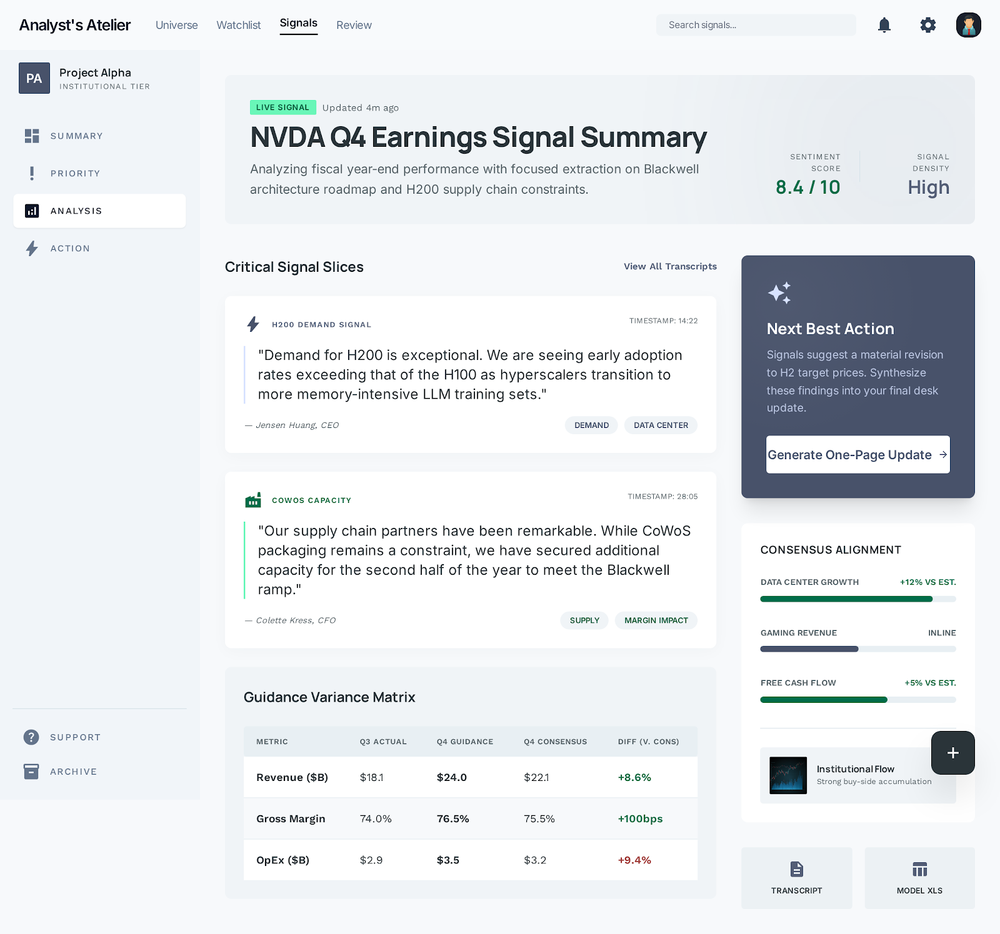

PF SAFE DEMO · 2026-03-15-p001
Earnings Call Signal Slicer
Slice long earnings transcripts into the few signals that actually change a semiconductor thesis.
ingest status
Imported from Stitch exportStitch export wrapped in a PF-safe shell so the visual remains intact while the published demo stays dependency-light.
- Source preserved as local artifact
- Public demo path avoids remote CDN dependency
- Preview uses the shipped Stitch screen
